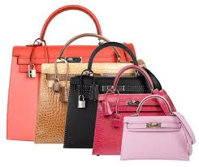

Історія бренду
Ім'я Hermès, що належить одному з найвідоміших домів моди, асоціюється у шанувальників з легендарними хустками-каре, сумками Birkin Bag, ременями з літерою H на пряжці і, звичайно ж, з помаранчевими коробочками з коричневими шовковими стрічками, на яких красується відомий логотип. Hermès випускає вироби з шкіри, одяг прет-а-порте, парфумерію і прикраси. Компанії Hermès International належить ціла імперія роздрібних магазинів в 35 країнах світу. Її доходи перевищують 1,5 млрд доларів.
У вітринах бутиків Hermès ніколи не з'являються вивіски «Sale», вони не роздають дисконтні картки і не продають ліцензії на випуск товарів під своєю маркою в Південно-Східну Азію. Бізнес легендарного дома донині залишається сімейним підприємством, чий успіх фахівці розглядають як один з найвдаліших прикладів сімейної справи.
Упряж
Свій розвиток бренд почав з виробництва кінної амуніції для осіб з вищих верств аристократії.Коли Тьєррі Ермес, іммігрував з Німеччини, він відкрив свою паризьку майстерню в жвавому, але не дуже вишуканому кварталі Мадлен. Він чимало зробив для того, щоб досягти успіху — майстерня відкрилася в 1837, а через тридцять років його машина для підгонки вуздечок завоювала медаль першого класу на Всесвітній Виставці. Forme a Collier d'Hermès робила ті тисячі дрібних рухів, які до цього століттями були таємницею майстрів-шорників, підганяли вуздечки для коней. Ермес за віросповіданням були протестантами і працювали з властивим протестантам якостями: повільно, але з гарантовано успішними результатами.
Шовковий квадрат
У 1928 році Hermès не зробив свою першу шовкову хустку. Абсолютно новий продукт запускали довго — на потік виробництво знаменитих «каре» вийшло лише у 1937 році.Розташована в Ліоні фабрика може зробити 40000 хусток за тиждень (на практиці обсяг виробництва дещо менше), щороку виходять дві колекції. Усього за майже сімдесят років Hermès виробив майже 25000 оригінальних моделей. На початку п'ятдесятих в хустці Hermès відзначилася королева Єлизавета II. І не на смузі світської хроніки, а на поштовій марці Великої Британії. З тих пір хто тільки не служив для Hermès рекламою (найчастіше безкоштовною): Катрін Денев та Одрі Гепберн, Джекі Кеннеді та Грейс Келлі. З двома останніми дамами у Hermès, втім, склалися абсолютно особливі відносини.
Kelly, O-bag та Birkin
У 1956 році Грейс Келлі потрапила на обкладинку журналу Life, оскільки вчорашня кінозірка щойно стала коронованою особою, вийшовши заміж за Рене III, князя Монако. Шию княгині прикрашала хустка від Hermès, в руках колишня актриса стискала сумочку, яку негайно захотіли всі модниці світу. Це була Kelly Bag, перша «іменна» сумка від Hermès. Дістати її виявилося зовсім непросто, тому що разом з сумкою в Hermès винайшли геніальний маркетинговий хід: не можна було просто прийти в магазин і купити бажану річ. «На виготовлення нашої сумки йде від півтора до двох місяців», — на цих словах люди з Hermès піднімають палець і відправляють клієнтку в кінець черги, яка може тривати від кількох тижнів до року. Популярність Kelly від цього стала ще більшою. А через кілька років Hermès повторив цей маркетинговий хід з іменною сумкою, правда, трохи інакше. Обличчям сумки Constance стала Жаклін Кеннеді — і хоча прямо назвати виріб ім'ям колишньої першої леді з етичних міркувань не вийшло, назва Constance теж не прижилася — сумку стали називати O-bag, за новою прізвища Жаклін — Онассіс. Сумка була напевно найкращою в історії Hermès — зі зручними двома ручками та застібкою у вигляді великої літери Н. А вже коли настав час екранних принцес, символом Hermès стала Джейн Біркін. Сумка Біркін 1984 року — найпопулярніша сумочка від Hermès. І найдорожча. Модель Birkin bag стала культом серед найбагатших модниць світу.
Парфуми Hermès
Крім того, імперія Hermès створила більше п'яти десятків композицій парфумів. У п'ятдесятих роках XIX століття була випущена перша парфумована вода. Парфумерія та аромати Hermès створювалися і розроблялися у співпраці з відомими майстрами, такими як: Жан-Клод Еллена, Maurice Roucel, Jean-Louis Sieuzac, Francois Maurin, Jean Guichard, Guy Robert, Edmond Roudnitska, Nathalie Feisthauer, Francoise Caron, Олівія Джакобетті. Одними з найпопулярніших ароматів вважаються Terre (Земля) і Un Jardin Apres la Mousson (Сад після мусону).
Цікаві факти про Hermès
- На створення однієї сумки Birkin йде від 18 до 25 годин роботи цілого ательє. В середньому за тиждень в паризькій майстерні створюється близько 5 таких сумок.
- Сьогодні у Hermès відкрито 283 бутики по всьому світу, в тому числі 4 флагманських.
- Героїня Шерон Стоун у фільмі «Основний інстинкт» пов'язувала свого коханця легендарним шовковим шарфом Hermès.
- Черга на сумку Birkin може досягати шести років, залежно від замовленого типу шкіри і кольору.
- В одному з епізодів культового серіалу «Секс і Місто» Саманта Джонс використовує знайомство з актрисою Люсі Лью для покупки омріяної червоної Birkin bag без черги. Як відомо, дім моди робить виняток лише для зірок шоу-бізнесу.
- Шовкові шарфи Hermès також відіграють важливу роль і в книзі «Диявол носить Prada»: головна героїня роману Міранда одягає білосніжні шарфики майже до кожного нового наряду.